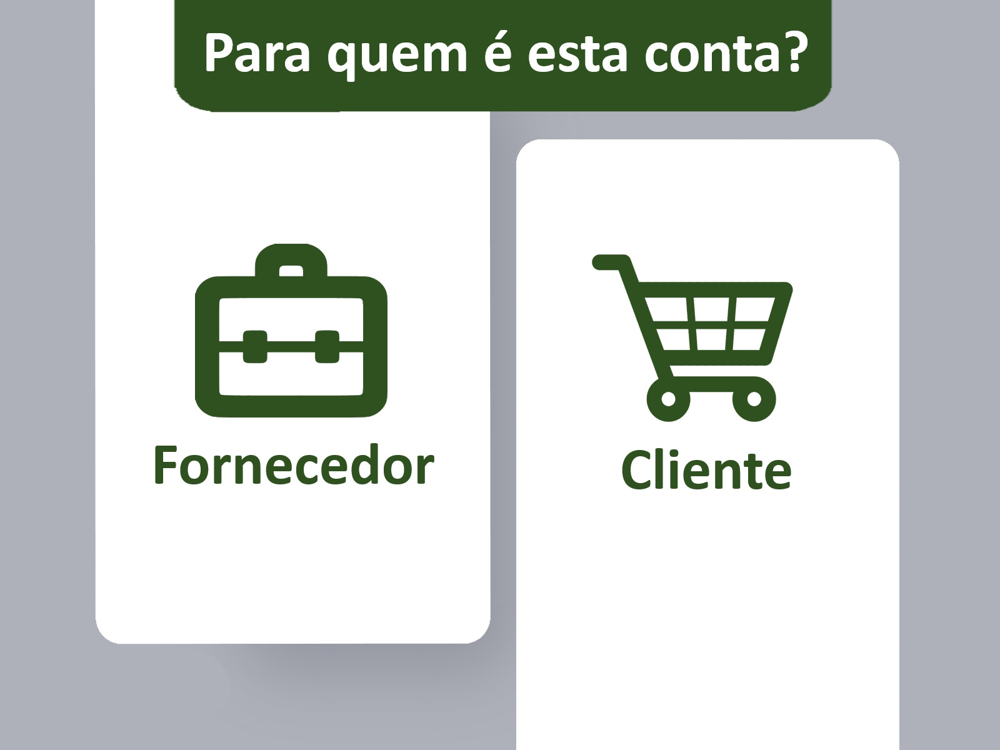

A tela de login possuirá um campo de e-mail e senha do lado direito da tela, e logo abaixo do campo de senha, há o link “Esqueceu a senha?” que leva o usuário para uma tela de redefinição de senha. No lado direito da tela, há um botão para fazer o cadastro de uma conta caso o cliente não possua uma conta.
Se o usuário não possuir uma conta ele terá que clicar no botão “Cadastre-se” que o encaminhará para uma tela de seleção entre fornecedor e cliente. Isso mudará muito como a conta do usuário será gerenciada, pois um fornecedor poderá cadastrar produtos no sistema, enquanto um cliente não. Do lado direito da tela, haverá um botão “Cliente” que irá levar o usuário para o cadastro de uma conta do tipo “cliente”, já do lado direito da tela, há um botão “Fornecedor” que levará o usuário para o cadastro de uma conta do tipo “fornecedor”.

Após a seleção do tipo de conta o usuário será levado para uma tela de cadastro que será diferente dependendo do tipo de conta que você escolher, nesse caso, a opção escolhida foi a opção “cliente”. A página possui três campos diferentes para o cadastro de um cliente, sendo eles nome completo, e-mail e senha. Após o preenchimento de todos os campos o usuário terá criado sua conta e será encaminhado para a página inicial do sistema.
A página inicial do sitema será onde o usuário irá encontrar os produtos que serão vendidos. Na parte superior da tela há uma pequena aba com três botões: meu perfil, carrinho de compras e contato. No botão “Meu perfil”, o usuário poderá acessar seu perfil no sistema, caso ele seja um fornecedor, lá irá mostrar todos os produtos a venda e que já foram vendidos. O usuário poderá também ver a lista de produtos comprados, isso estará disponível tanto para clientes quanto fornecedores. No botão “Carrinho de compras”, o usuário poderá acessar a lista de produtos que foram adicionados ao seu carrinho, que podem ser comprados a qualquer momento desde que estejam disponíveis. No botão “Contato”, o usuário poderá entrar em contato com os desenvolvedores, para relatar problemas, envios de feedback e entre outras razões.